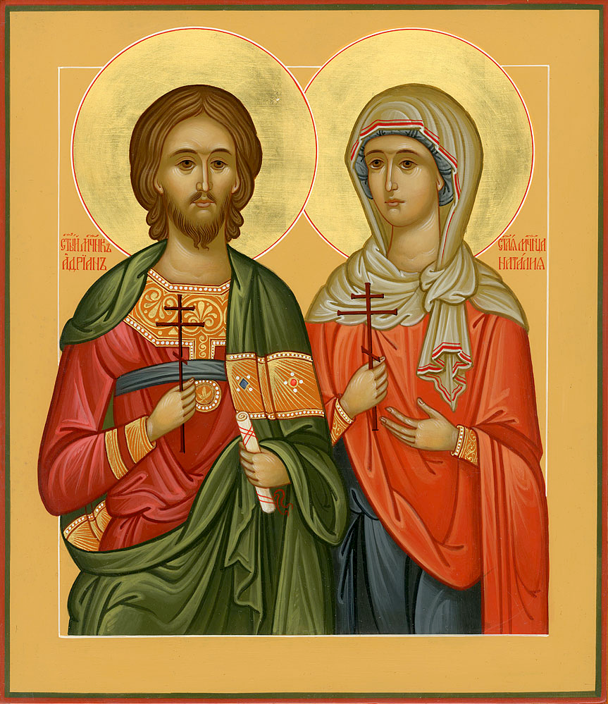

Тропарь святым мученикам
Адриану и Наталии Му́ченицы Твои́, Го́споди,/ во страда́ниих свои́х венцы́ прия́ша нетле́нныя от Тебе́, Бо́га на́шего:/ иму́ще бо кре́пость Твою́,/ мучи́телей низложи́ша,/ сокруши́ша и де́монов немощны́я де́рзости./ Тех моли́твами// спаси́ ду́ши на́ша.
Му́ченик возсия́ Боже́ственная па́мять/ и земны́я озари́ вся концы́ све́тло, с весе́лием зову́щих:// Ты еси́ му́чеников, Христе́, ра́дование.
О, свяще́нная дво́ице, святи́и му́ченицы Христо́ви, Адриа́не и Ната́лие, блаже́ннии супру́зи и до́блии страда́льцы! Услы́шите нас, моля́щихся вам со слеза́ми, и низпосли́те на ны вся благопотре́бная душа́м и телесе́м на́шим, и моли́те Христа́ Бо́га, да поми́лует нас и сотвори́т с на́ми по ми́лости Свое́й, да не поги́бнем во гресе́х на́ших. Ей, святи́и му́ченицы, приими́те глас моле́ния на́шего и изба́вите ны моли́твами ва́шими от гла́да, губи́тельства, тру́са, пото́па, огня́, гра́да, меча́, на́шествия иноплеме́нников и междоусо́бныя бра́ни, от напра́сныя сме́рти и от всех бед, печа́лей и боле́зней, да вы́ну, ва́шими моли́твами и предста́тельством укрепля́емии, просла́вим Го́спода Иису́са Христа́, Ему́же подоба́ет вся́кая Сла́ва, честь и поклоне́ние, со Безнача́льным его́ Отце́м и Пресвяты́м Ду́хом, во ве́ки веков. Ами́нь.
О, святи́и му́ченицы Адриа́не и Ната́лие! Услы́шите нас, раб Бо́жиих (имена), в час сей к вам моля́щихся: помоли́теся о нас Влады́це Христу́ Бо́гу, мно́го бо дерзнове́ние к Нему́ стяжа́ли есте́, и́скреннии моле́бницы о нас су́ще. Умоли́те Го́спода отпусти́ти на́ша грехи́ и Небе́снаго Ца́рствия сподо́бити нас, да ку́пно с ва́ми просла́вим великоле́пое и́мя Пресвяты́я Тро́ицы, Отца́ и Сы́на и Свята́го Ду́ха, во ве́ки веко́в. Ами́нь.
О, многострада́льные и всехва́льнии му́ченицы Христо́вы Адриа́не и Ната́лие! К ва́шему всеми́лостивому заступле́нию ны́не прибега́ю аз, недосто́йный (имя). Умоли́те великодарови́таго Бо́га, да воздви́гнет нас из глубины́ грехо́вныя, просвети́т наш ум, прекрати́т за́висть, вражду́ и раздо́ры, в нас живу́щие. Да ниспосле́т раба́м Бо́жиим (имена) супру́жеский мир и согла́сие и да огради́т ополче́нием святы́х Свои́х А́нгелов от ко́зней лука́ваго. Ами́нь.